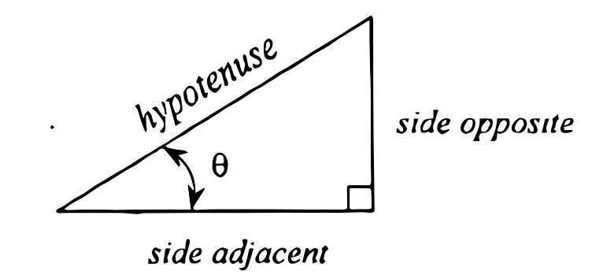
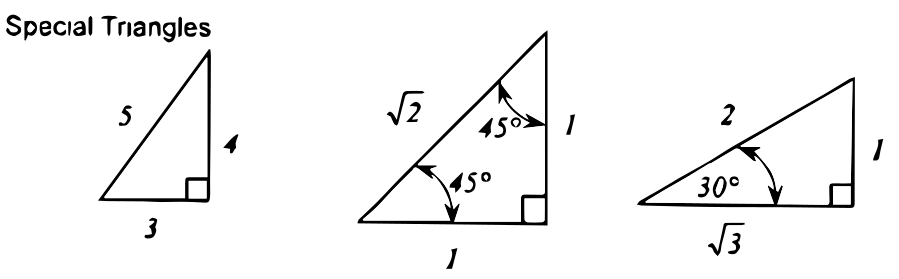
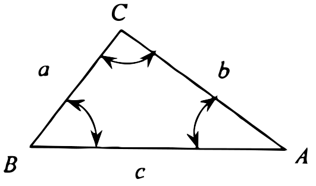
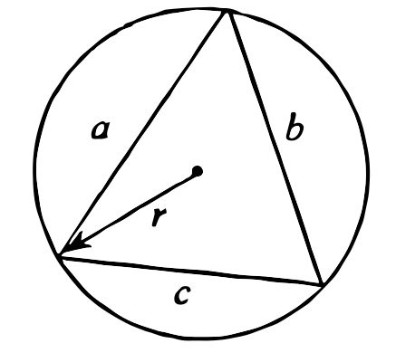
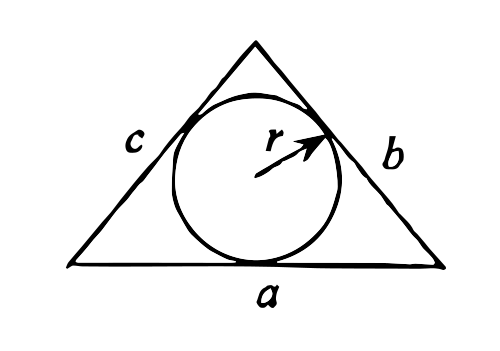
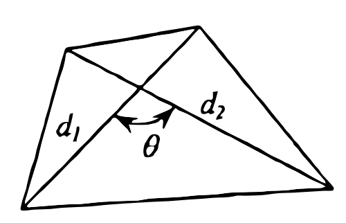
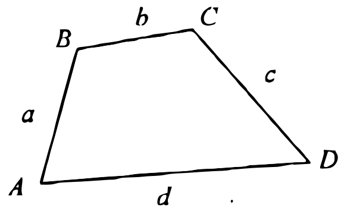

Plane Trigonometry
-
Solutions to right triangles
Trigonometric functions:
$\sin \theta = {\text{side opposite} \over \text{hypotenuse}}$
$\cos \theta = {\text{side adjacent} \over \text{hypotenuse}}$
$\tan \theta = {\text{side opposite} \over \text{side adjacent}}$
$\cot \theta = {\text{side adjacent} \over \text{side opposite}}$
$\sec \theta = {\text{hypotenuse} \over \text{side adjacent}}$
$\csc \theta = {\text{hypotenuse} \over \text{side opposite}}$
The Pythagorean Theorem
In a right triangle, the sum of the squares of the length of the sides is equal to the square of the hypotenuse. This was formulated by Pythagoras (c.580 - c.500 B.C.). Its mathematical expression is${a^2} + {b^2} = {c^2}$

-
Solutions to oblique triangles

Law of sines: This was first demonstrated by Ptolemy of Alexandria in about 150 A.D.
${a \over {\sin A}} = {b \over {\sin B}} = {c \over {\sin C}}$
Law of cosines: This was first described by a French mathematicians, Francois Viete (1540-1603).
$\eqalign{
& {a^2} = {b^2} + {c^2} - 2bc\cos A \cr
& {b^2} = {a^2} + {c^2} - 2ac\cos B \cr
& {c^2} = {a^2} + {b^2} - 2ab\cos C \cr} $Law of tangents: This was first described by a Danish mathematician and physician Thomas Fincke (1561-1656) in 1583.
${{a - b} \over {a + b}} = {{\tan {1 \over 2}\left( {A - B} \right)} \over {\tan {1 \over 2}\left( {A + B} \right)}}$
-
Fundamental trigonometric identities
-
Reciprocal relations:
$\sin A = {1 \over {\csc A}}$ $\cot A = {1 \over {\tan A}}$ $\cos A = {1 \over {\sec A}}$ $\sec A = {1 \over {\cos A}}$ $\tan A = {1 \over {\cot A}}$ $\csc A = {1 \over {\sin A}}$ -
Pythagorean relations:
$\eqalign{
& {\sin ^2}A + {\cos ^2}A = 1 \cr
& 1 + {\cot ^2}A = {\csc ^2}A \cr
& 1 + {\tan ^2}A = {\sec ^2}A \cr} $ -
Sum of angles formulas:
$\eqalign{
& \sin (A + B) = \sin A\cos B + \cos A\sin B \cr
& \cos (A + B) = \cos A\cos B - \sin A\sin B \cr
& \tan (A + B) = {{\tan A + \tan B} \over {1 - \tan A\tan B}} \cr} $ -
Difference of angles formulas:
$\eqalign{
& \sin (A - B) = \sin A\cos B - \cos A\sin B \cr
& \cos (A - B) = \cos A\cos B + \sin A\sin B \cr
& \tan (A - B) = {{\tan A - \tan B} \over {1 + \tan A\tan B}} \cr} $ -
Double angle formulas:
$\eqalign{
& \sin 2A = 2\sin A\cos A \cr
& \cos 2A = {\cos ^2}A - {\sin ^2}A \cr
& \tan 2A = {{2\tan A} \over {1 - {{\tan }^2}A}} \cr} $ -
Power of functions:
$\eqalign{
& {\sin ^2}A = {1 \over 2}(1 - \cos 2A) \cr
& {\cos ^2}A = {1 \over 2}(1 + \cos 2A) \cr
& {\tan ^2}A = {{1 - \cos 2A} \over {1 + \cos 2A}} \cr} $ -
Functions of half angles:
$\eqalign{
& \sin {A \over 2} = \pm \sqrt {{{1 - \cos A} \over 2}} \cr
& \cos {A \over 2} = \pm \sqrt {{{1 + \cos A} \over 2}} \cr
& \tan {A \over 2} = {{1 - \cos A} \over {\sin A}} = {{\sin A} \over {1 + \cos A}} \cr} $ -
Sum of two functions:
$\eqalign{
& \sin A + \sin B = 2\sin {1 \over 2}\left( {A + B} \right)\cos {1 \over 2}\left( {A - B} \right) \cr
& \cos A + \cos B = 2\cos {1 \over 2}\left( {A + B} \right)\cos {1 \over 2}\left( {A - B} \right) \cr
& \tan A + \tan B = {{\sin \left( {A + B} \right)} \over {\cos A\cos B}} \cr} $ -
Difference of two functions:
$\eqalign{
& \sin A - \sin B = 2\cos {1 \over 2}\left( {A + B} \right)\sin {1 \over 2}\left( {A - B} \right) \cr
& \cos A - \cos B = 2\sin {1 \over 2}\left( {A + B} \right)\sin {1 \over 2}\left( {A - B} \right) \cr
& \tan A - \tan B = {{\sin (A - B)} \over {\cos A\cos B}} \cr} $ -
Product of two functions:
$\eqalign{
& 2\sin A\sin B = \cos \left( {A - B} \right) - \cos \left( {A + B} \right) \cr
& 2\sin A\cos B = \sin \left( {A + B} \right) + \sin \left( {A - B} \right) \cr
& 2\cos A\cos B = \cos \left( {A + B} \right) + \cos \left( {A - B} \right) \cr} $
-
-
Plane area
-
Triangles:
Given base and altitude: $A = {1 \over 2}bh$
Given 2 sides and included angle: $A = {1 \over 2}ab\sin \theta $
Given 3 sides
Using Heron's Formula: Named after Heron of Alexandria (1st Century AD)$$A = \sqrt {s(s - a)(s - b)(s - c)} $$
where: $s = {{a + b + c} \over 2}$
Triangle inscribed in a circle:

$$A = {{abc} \over {4r}}$$
Triangle circumscribing a circle:

$$A=rs$$
where: $s = {{a + b + c} \over 2}$
Triangle with escribed circle:

$$A=r(s-a)$$
where: $s = {{a + b + c} \over 2}$ and a is the side physically tangent to the circle
-
Quadrilaterals:
Given 2 diagonals and included angle

$$A = {1 \over 2}{d_1}{d_2}\sin \theta $$
Given 4 sides and 2 opposite angles

$$A = \sqrt {(s - a)(s - b)(s - c)(s - d) - abcd{{\cos }^2}\theta } $$
where:
$\eqalign{
& s = {{a + b + c + d} \over 2} \cr
& \theta = {{A + C} \over 2} = {{B + D} \over 2} \cr} $Cyclic quadrilateral: (All vertices lie on a circle)

$$A = \sqrt {(s - a)(s - b)(s - c)(s - d)} $$
Note: $\eqalign{
& A + C = {180^ \circ } \cr
& B + D = {180^ \circ } \cr} $Ptolemy's Theorem states that "The sum of the two pairs of opposite sides of a convex quadrilateral inscribed in a circle is equal to the product of te lengths of the diagonals"
$$ac + bd = {d_1}{d_2}$$
where: d1 and d2 are diagonals of a quadrilateral
This theorem was named after the geographer, mathematician and astronomer, Ptolemy or Claudius Ptolemaeus (c. 100-c. 168 A.D.) of Alexandria
-